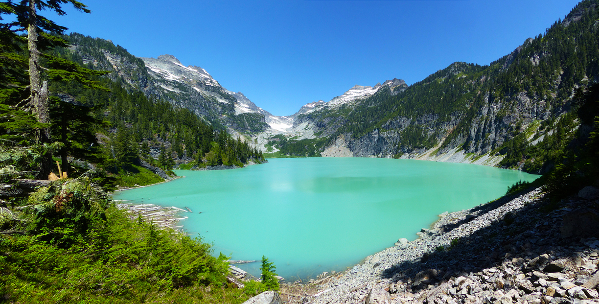
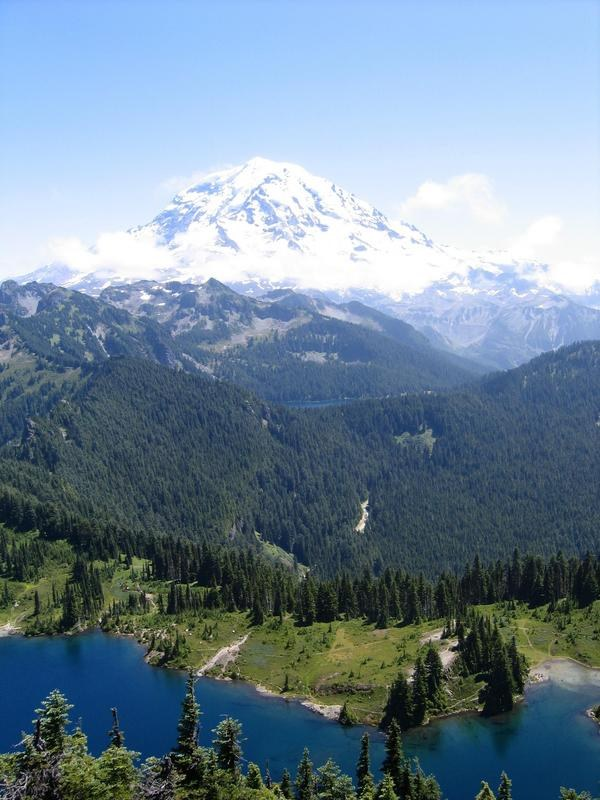
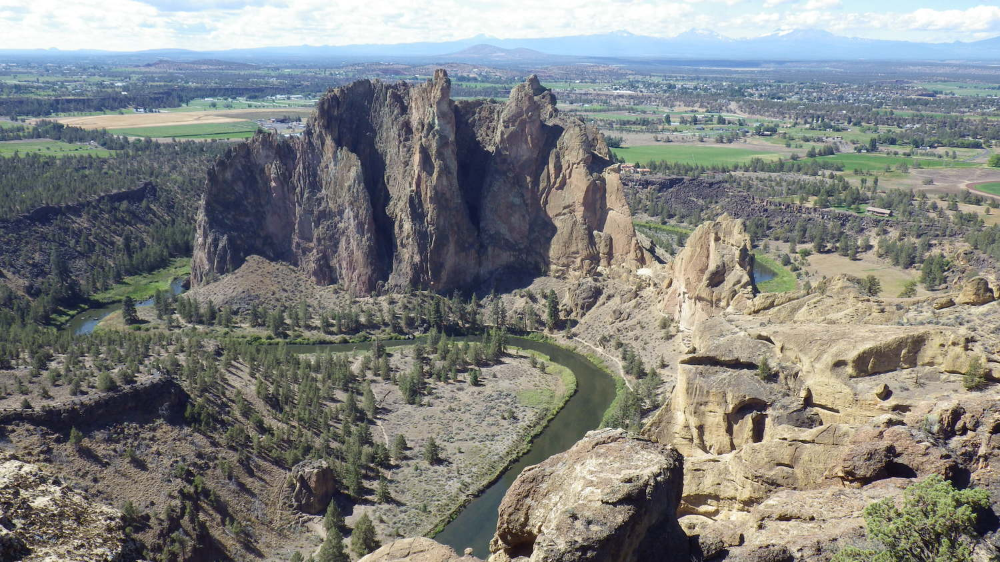
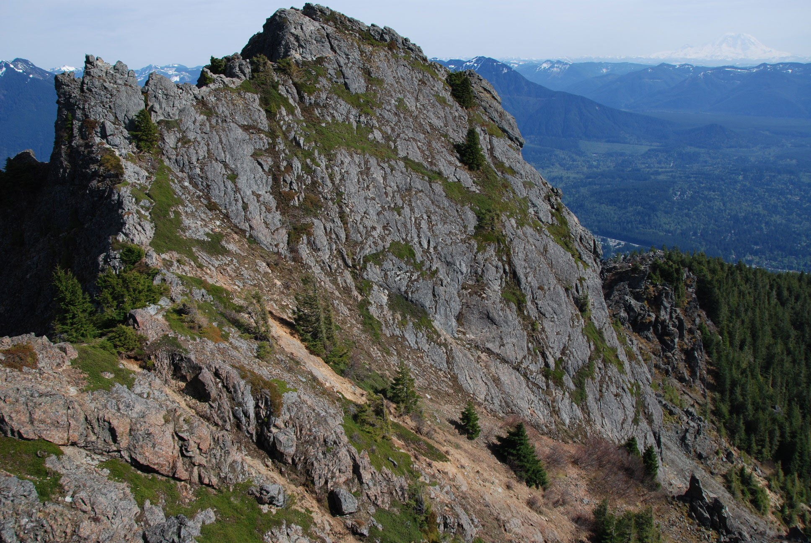

Blanca Lake
Location: Central Cascades -- Stevens Pass - West
Length: 7.5 miles, roundtrip
Elevation Gain: 3300 ft. Highest Point: 4600 ft.
Difficulty Rating: 4 out of 5

The trail is in excellent shape, and gets right down to business, starting off venturing through a close forest with very little understory, but lots of moss. As you climb, you move swiftly from one steep but well-designed switchback to another, and yet another, gaining a little under 3,000 feet in a little under 3 miles.
While this can be draining, rewards await you at the top. Huckleberry bushes line the trail, and tired hikers can stop and munch on the sweet treats their their heart's content. After three miles, the trail reaches a ridgeline with a set of switchbacks heading up a rocky face. If you look to the east, some stellar views of the mountains can be seen, and on a clear day Glacier Peak graces hikers with an up-close and personal view.
Tolmie Peak Lookout
Location: Mount Rainier Area -- NW - Carbon River/Mowich
Length: 7.5 miles, roundtrip
Elevation Gain: 1100 ft. Highest Point: 5900 ft.
Difficulty Rating: 4 out of 5

Hike to an old fire lookout with in-your-face views of Mount Rainier and a sapphire blue lake below. Tolmie Peak and Eunice Lake pack a one-two punch when it comes to scenery, but stopping at the picturesque lake is a perfectly acceptable destination as well.
From the parking area at Mowich campground, set off around the west side of big, calm Mowich Lake. Take note, this is a great spot to take a quick dip once you're back from your outing. Follow the trail through open lowland forest along the west side of the lake, gaining elevation gradually, and then on increasingly steep grade as you move away from the lake up to tiny Ipsut Pass nearly two miles from the trailhead. This pass is part of the Wonderland Trail – look down the other side of it to get an idea of how steep sections of this iconic trail are.
Smith Rock State Park
Location: Length: Elevation: Difficulty:

If you enjoy scenic views of deep river canyons or rock climbing, Smith Rock State Park is the place for you. There are several thousand climbs in the park. More than a thousand are bolted routes. We also offer miles of hiking and mountain biking trails. Along your trip through the canyon, you might see golden eagles, prairie falcons, mule deer, river otter and beaver.
Due to the uniqueness and fragile aspect of the park, park rangers enforce the animal leash law and strongly encourage all park users to stay on trails.
Camping info
* Walk-in bivouac area for tents (No reservations)
* RV camping, sleeping in vehicles and open fires are not allowed
Mount Si
Location: Length: Elevation: Difficulty:

Description of hike: Mount Si Trail is a 7.6 mile heavily trafficked out and back trail located near North Bend, Washington that features beautiful wild flowers and is rated as difficult. The trail offers a number of activity options and is best used from April until November. Dogs are also able to use this trail but must be kept on leash.
Rattlesnake Ledge
Location: Snoqualmie Region -- North Bend Area
Length: 4.0 miles, roundtrip
Elevation Gain: 1160 ft. Highest Point: 2078 ft
Difficulty Rating: 4 out of 5

As soon as you arrive in the parking lot you have a view of Rattlesnake Ledge's sheer rock face across Rattlesnake Lake. At this point it seems amazing to think you will be up there by the end of your hike, but a look at a trail map will reveal some well-engineered switchbacks -- courtesy of many WTA work parties -- that will get you to your destination with less effort than you might expect. The old trail to the summit was in bad shape from heavy use and no maintenance, but WTA work parties helped create this beautiful avenue through second-growth forest to the rocky ledges. In addition to adding a half mile to the old trail, the steepness was lessened a bit.
From the parking lot, head to a gate on the southeast side of the lake and follow a short service road about a quarter-mile to the trailhead. There you will find porta-potties and a very informative kiosk with maps, trail information and history of the area. To the right is the well signed trailhead. Begin hiking here.